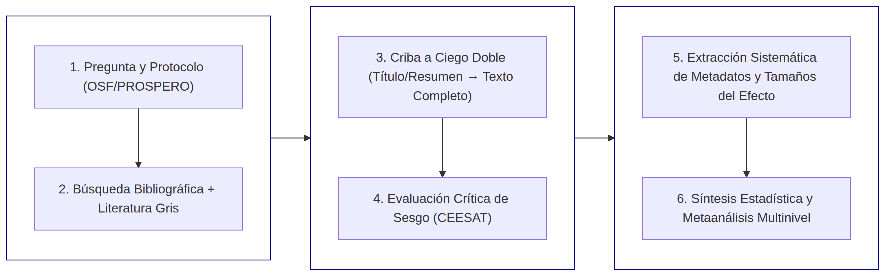
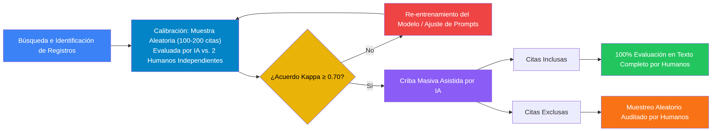

Revisiones Sistemáticas y Metaanálisis en Investigación Biológica
Fundamentos Metodológicos, Herramientas Digitales e Implicaciones Éticas de la IA
Rodian Fonseca Campuzano
2026-10-02
Contenido
Fundamentos y Tipología de la Síntesis de Evidencia
Marcos Conceptuales y Estándares de Reporte
Fases en el Desarrollo Metodológico
Síntesis Cuantitativa y Metaanálisis
Ecosistema de Herramientas Digitales e IA
Desafíos Éticos e Implicaciones
Ejemplos Prácticos en Biología
Conclusiones
1. Fundamentos y Tipología de la Síntesis de Evidencia
La Necesidad de Síntesis en Biología
Acumulación exponencial de literatura: Imposibilidad de abarcar todo el conocimiento con revisiones narrativas tradicionales.
Riesgos de las Revisiones Narrativas:
Sesgo de selección explícito o implícito.
Subjetividad e imposibilidad de réplica.
Alternativa
La Revisión Sistemática garantiza transparencia, reproducibilidad y rigor metodológico.
Taxonomía de la Síntesis de Evidencia
| Tipo | Objetivo Principal | Evaluación de Sesgo | Tipo de Síntesis | |
|---|---|---|---|---|
| Revisión Sistemática | Responder preguntas específicas de eficacia/impacto | Obligatoria e intensiva | Cualitativa o Cuantitativa | |
| Metaanálisis | Combinar estimadores numéricos para un efecto global | Obligatoria (ponderación) | Estadística (Efectos Mixtos) | |
| Scoping Review | Mapear conceptos clave y vacíos de conocimiento | Opcional / No requerida | Descriptiva y Temática | |
| Systematic Map | Catalogar bases de datos de evidencia primaria | Opcional (Metadatos) | Mapas teóricos e interactivos | |
| Rapid Review | Síntesis acelerada para decisiones urgentes | Simplificada / Restringida | Narrativa o Metaanálisis preliminar | |
| Living Review | Actualización continua ante rápida evolución | Continua y dinámica | Repositorios dinámicos |
Particularidades en Biología vs. Biomedicina
Biomedicina humana:
Predominio de Ensayos Controlados Aleatorizados (ECA).
Enfoque monoespecífico (Homo sapiens).
Biología y Ecología:
Heterogeneidad multinivel (taxones, ecotipos, niveles tróficos).
Diseños predominantemente observacionales o de campo.
Objetivo: Quantificar patrones globales, explorar la heterogeneidad (\(I^2\)) y evaluar moderadores ecológicos.
2. Marcos Conceptuales y Estándares
Formulación de Preguntas: PICO vs. PECO
La mayoría de estudios biológicos evalúan exposiciones a factores estresantes en lugar de intervenciones médicas directas.
PICO (Clínico): Population, Intervention, Comparison, Outcome
PECO (Ecológico/Ambiental): Population, Exposure, Comparison, Outcome
Ejemplo Aplicado (PECO):
P: Comunidades de ectotermos terrestres en el Neotrópico.
E: Incremento de \(+2^\circ\text{C}\) en la temperatura media marina.
C: Registros térmicos basales / sitios de control no alterados.
O: Tasa de fecundidad y cambio en la diversidad funcional.
Otros Marcos de Pregunta
PEO (Population, Exposure, Outcome):
- Prescinde del comparador explícito cuando no hay sitio de control en hábitats naturales.
SPIDER (Sample, Phenomenon of Interest, Design, Evaluation, Research type):
- Orientado a estudios cualitativos, conductuales o etológicos.
PCC (Population, Concept, Context):
- Utilizado en Revisiones de Alcance (Scoping Reviews).
Estándares de Reporte: ROSES y PRISMA-EcoEvo
La declaración PRISMA tradicional presenta limitaciones al abordar la no independencia de datos ecológicos.
ROSES
RepOrting standards for Systematic Evidence Syntheses
Desarrollado por la CEE1.
Formularios específicos para revisiones y mapas sistemáticos ambientales.
Auditoría rigurosa de estrategias de búsqueda.
PRISMA-EcoEvo
Extensión oficial para Ecología y Evolución
Lista de verificación de 27 ítems.
Registro explícito de no independencia (filogenia, medidas repetidas).
Exige compartir códigos e insumos estadísticos abiertos.
3. Fases Metodológicas de la Revisión Sistemática
Flujo Metodológico
Estrategia de Búsqueda y Selección
Ecuaciones de Búsqueda:
Uso de operadores booleanos (
AND,OR,NOT), comodines (*), y proximidad.Bases de datos: Web of Science, Scopus, PubMed, Google Scholar.
Literatura Gris:
Informes gubernamentales, tesis doctorales, repositorios de preprints.
Indispensable para contrarrestar el sesgo de publicación.
Criba e Inter-evaluador:
Criba por al menos 2 evaluadores independientes en ciego.
Medición del acuerdo mediante el coeficiente Kappa de Cohen (\(\kappa\)).
4. Síntesis Cuantitativa y Metaanálisis
Métricas de Tamaño del Efecto
1. Razón de Respuesta Logarítmica (\(\ln RR\))
\[ \ln RR = \ln\left(\frac{\bar{X}_E}{\bar{X}_C}\right), \quad v_{\ln RR} = \frac{S_E^2}{n_E \bar{X}_E^2} + \frac{S_C^2}{n_C \bar{X}_C^2} \]
- Expresa el cambio proporcional respecto al control.
2. Diferencia de Medias Estandarizada (\(g\) de Hedges)
\[ g = J \times \left( \frac{\bar{X}_E - \bar{X}_C}{S_{pooled}} \right), \quad J = 1 - \frac{3}{4(n_E + n_C - 2) - 1} \]
- Corrige la sobreestimación en muestras pequeñas mediante el factor \(J\).
3. Razón Logarítmica de Varianzas (\(\ln VR\))
- Mide el impacto en la plasticidad fenotípica o variabilidad intra-tratamiento.
Modelos Multinivel y Dependencia Estadística
Los datos biológicos violan el supuesto de independencia:
Múltiples efectos dentro de un mismo artículo (efecto de estudio).
Estructura de filogenia compartida entre especies (matriz de covarianza filogenética).
Visualización Moderna: orchaRd 2.0
Sustituye los gráficos de bosque (forest plots) por gráficos de orquídea (orchard plots):
Intervalo de Confianza (95% IC): Precisión del estimador global.
Intervalo de Predicción (95% IP): Rango esperado para futuros estudios primarios (heterogeneidad biológica real).
Beeswarm (Diagrama de abejas): Despliega cada tamaño de efecto \(y_i\) con tamaño proporcional a su precisión (\(1/SE\)).
Métricas: Calcula la heterogeneidad multinivel \(I^2_{ml}\) y \(R^2_{ml}\).

5. Herramientas Digitales e IA
Ecosistema de Software Especializado
| Plataforma | Tipo de Acceso | Enfoque Principal |
|---|---|---|
| CADIMA | Gratuito (CEE/JKI) | Flujo completo en ecología, agronomía y ciencias ambientales |
| Covidence | Comercial (Cochrane) | Criba y extracción colaborativa con ciego automático |
| Rayyan | Freemium | Criba rápida de títulos/resúmenes en entorno móvil y web |
| ASReview | Código Abierto | Criba asistida por Machine Learning (Aprendizaje Activo) |
metafor & orchaRd |
R / Gratuito | Modelado estadístico multinivel, filogenético y visualización |
Inteligencia Artificial en el Flujo de Trabajo
Formulación y Búsqueda: Traducción de PECO a sintaxis complejas.
Criba Inteligente: Reordenamiento por relevancia en tiempo real mediante aprendizaje activo.
Extracción Automática: Lectura de tablas en PDF y extracción de datos cuantitativos (\(n, \bar{X}, SD\)).
Marcos de Reporte para IA: PRISMA-trAIce garantiza la trazabilidad del trabajo híbrido entre humanos y algoritmos.

6. Desafíos Éticos e Implicaciones
Riesgos y Limitaciones de la IA
Sesgo Algorítmico:
Los modelos LLM heredan sesgos taxonómicos y geográficos globales.
Riesgo de descartar investigación regional o de especies no modelo.
“Alucinaciones” y Fabricación de Datos:
Confusión entre SD y SE, o invención de números/citas.
Un solo dato erróneo altera el cálculo del modelo multinivel.
Caja Negra e Irreproducibilidad:
Cambios no documentados en modelos comerciales cerrados.
Exige publicar prompts, parámetros de temperatura y versiones de la API1.
Principio de Responsabilidad Humana
Directriz Consensuada (Cochrane / CEE)
La Inteligencia Artificial es una herramienta de soporte a la decisión (decision-support tool).
Las decisiones metodológicas sustantivas, la evaluación final de sesgos y la interpretación teórica son responsabilidad inalienable de los investigadores humanos.

7. Ejemplos en Biología
Ejemplo Práctico 1: Metaanálisis Multinivel en Biología de Conservación y Cambio Climático
Título de la Investigación
Efectos del estrés térmico por olas de calor marinas en la tasa de blanqueamiento y la calcificación de corales escleractinios (Scleractinia) en arrecifes tropicales: Una revisión sistemática y metaanálisis multinivel.

A part of Moofushi’s bleached coral reef (Alifu Dhaalu Atoll, Maldives), damaged by warming sea temperatures. It was strongly hit by 1998’s El Niño; no live coral is still practically visible 8 years later. Fuente

Paso 1: Definición Operativa de la Pregunta (PECO) y Registro del Protocolo
- Población (P): Colonias adultas de corales escleractinios formadores de arrecifes pertenecientes a las familias Acroporidae y Poritidae en zonas arrecifales tropicales.
- Exposición (E): Eventos de estrés térmico definidos como olas de calor marinas donde la temperatura superficial del mar (SST) excede en \(\ge +1.5\text{ }^\circ\text{C}\) la media máxima estival histórica por una duración continua de \(\ge 14\) días.
- Comparador (C): Colonias conspecíficas o controles dentro del mismo hábitat expuestas a condiciones térmicas basales estivales normales (\(0\text{ }^\circ\text{C}\) de anomalía).
- Resultados / Outcomes (O):
- Resultado Primario: Tasa de blanqueamiento coralino, medida como el porcentaje de densidad celular de zooxantelas (Symbiodiniaceae) perdidas por \(\text{cm}^2\) o la disminución en la concentración de clorofila \(a\) (\(\mu\text{g cm}^{-2}\)).
- Resultado Secundario: Tasa de calcificación neta del esqueleto coralino expresada en \(\text{g CaCO}_3\text{ cm}^{-2}\text{ año}^{-1}\).
- Registro Prospectivo del Protocolo: Registrado en la plataforma Open Science Framework (OSF) antes de iniciar la criba bibliográfica (DOI:
10.17605/OSF.IO/EXAMPLE_CORAL_2026).
Paso 2: Cadena Sintáctica de Búsqueda y Literatura Gris
Se diseñó una ecuación sintáctica estructurada ejecutada en Web of Science Core Collection, Scopus, y PubMed:
Para controlar el sesgo de publicación, se consultaron tres fuentes de literatura gris:
Informes técnicos de la National Oceanic and Atmospheric Administration (NOAA Coral Reef Watch).
Actas de congresos de la International Coral Reef Society (ICRS).
Repositorios de preprints (bioRxiv y ecoEvoRxiv).
Paso 3: Criba e Inter-evaluación bajo PRISMA-trAIce
- Fase de Calibración: Dos investigadores y el módulo de aprendizaje activo de ASReview evaluaron una muestra de 150 resúmenes obteniendo un coeficiente de concordancia de \(\kappa = 0.82\).
- Criba de Títulos y Resúmenes: Criba de 1,170 registros desduplicados en CADIMA, seleccionando 140 artículos a texto completo.
- Evaluación en Texto Completo: Selección final de 38 estudios primarios independientes que aportaron 112 tamaños del efecto cuantitativos.
Paso 4: Evaluación de Riesgo de Sesgo con CEESAT
Cada estudio fue evaluado con la herramienta CEESAT1 analizando:
Aleatoriedad en la selección de colonias y existencia de sitios de control.
Control de variables confusoras (irradiancia solar PAR y flujo de agua).
Calibración de sensores de temperatura in situ.
Paso 5: Extracción de Datos y Métricas de Tamaño del Efecto
| Estudio Primario | Taxón / Especie | Región | Anomalía (°C) | \(\bar{X}_E\) (%) | \(S_E\) | \(n_E\) | \(\bar{X}_C\) (%) | \(S_C\) | \(n_C\) | \(\ln RR\) | \(v_{\ln RR}\) |
|---|---|---|---|---|---|---|---|---|---|---|---|
| García et al. (2021) | Acropora palmata | Caribe | \(+2.0\) | 68.5 | 12.1 | 15 | 12.3 | 4.2 | 15 | 1.717 | 0.0099 |
| Muñoz & Silva (2022) | Porites astreoides | Caribe | \(+2.0\) | 34.2 | 8.5 | 12 | 10.1 | 3.1 | 12 | 1.220 | 0.0125 |
| Chen et al. (2023) | Acropora cervicornis | Indo-Pacífico | \(+2.5\) | 82.0 | 10.4 | 20 | 8.5 | 2.8 | 20 | 2.267 | 0.0063 |
Demostración Matemática de ejemplo para García et al. (2021)
\[\ln RR = \ln\left(\frac{68.5}{12.3}\right) = \ln(5.5691) \approx 1.717\]
\[v_{\ln RR} = \frac{12.1^2}{15 \times 68.5^2} + \frac{4.2^2}{15 \times 12.3^2} = \frac{146.41}{70383.75} + \frac{17.64}{2269.35} \approx 0.0099\]
Paso 6: Script de Ejecución en R para el Modelo Multinivel
library(metafor)
library(orchaRd)
# 1. Ajustar modelo metaanalítico multinivel con covarianza filogenética
model_corales <- rma.mv(
yi = lnRR,
V = v_lnRR,
mods = ~ Anomalia_Termica + Region,
random = list(~ 1 | ID_Estudio, ~ 1 | ID_Efecto, ~ 1 | Especie_Phylo),
R = list(Especie_Phylo = phylo_matrix),
data = datos_corales,
method = "REML"
)
# 2. Resumen estadístico
summary(model_corales)
# 3. Visualización con Gráfico de Orquídea (orchaRd 2.0)
orchard_plot(model_corales, mod = "Region", group = "ID_Estudio",
xlab = "Razón de Respuesta Logarítmica (lnRR)",
legend.pos = "top.left")Resultados Estadísticos
El modelo indicó un tamaño del efecto global significativo de \(\ln RR = 1.64\) (\(95\%\text{ IC} = [1.28, 2.00]\), \(p < 0.001\)), equivalente a un incremento del \(+415\%\) en el blanqueamiento.
La heterogeneidad desglosada (\(I^2_{ml}\)) asignó \(42\%\) a diferencias entre estudios, \(28\%\) a la estructura filogenética y \(30\%\) al error residual.
Ejemplo Práctico 2: Revisión Sistemática Tradicional (Síntesis Cualitativa)
Título de la Investigación
Eficacia de las técnicas de restauración ecológica pasiva frente a la activa en la recuperación de servicios ecosistémicos de polinización en agroecosistemas neotropicales degradados: Una revisión sistemática cualitativa bajo el estándar ROSES.

Tree cover being re-established through assisted natural regeneration in recovered cattle pasture in the Maya Biosphere Reserve. Photo credit: ©WCS Guatemala. Fuente
Paso 1: Definición de la Pregunta (PECO) y Protocolo ROSES
- Población (P): Agroecosistemas tropicales y paisajes agrícolas degradados en América Latina.
- Exposición / Intervención (E): Restauración ecológica pasiva (regeneración asistida/exclusión de ganado) frente a activa (siembra de franjas nectaríferas y corredores florales).
- Comparador (C): Monocultivos agrícolas intensivos adyacentes no restaurados o zonas degradadas basales.
- Resultados / Outcomes (O): Recuperación funcional de la polinización (riqueza de polinizadores nativos, tasa de visitas a flores y cuajado de frutos).
- Registro del Protocolo: Registrado en la Collaboration for Environmental Evidence (ID:
CEE-26-089).
Paso 2: Búsqueda Multilingüe y Fuentes Registradas
Búsqueda realizada en español, inglés y portugués en Web of Science, SciELO, Redalyc, DOAJ y literatura gris de institutos regionales (Instituto Humboldt, EMBRAPA, CONABIO):
Paso 3: Selección y Diagrama ROSES
- Registros brutos recuperados: 820.
- Registros tras desduplicar: 660.
- Excluidos en título/resumen: 510.
- Texto completo evaluado: 150 artículos (112 excluidos con causa documentada).
- Estudios seleccionados para la síntesis: 38 estudios primarios cualitativos u observacionales.
Paso 4: Justificación Metodológica de la Imposibilidad de Metaanálisis
Se determinó no realizar síntesis cuantitativa debido a tres barreras metodológicas:
- Heterogeneidad Métrica Extrema: Variabilidad de variables no estandarizables (número de granos de polen por estigma vs. abundancia en trampas pan-trap vs. % aborto de frutos).
- Ausencia de Medidas de Dispersión: El \(60\%\) de los reportes técnicos de literatura gris omitió la desviación estándar (\(SD\)), error estándar (\(SE\)) o tamaños muestrales (\(n\)).
- Mezcla de Diseños: Incompatibilidad entre experimentos manipulativos de campo e inventarios etnoecológicos cualitativos.
Paso 5: Matriz Cualitativa de Evidencia y Síntesis Narrativa
| Categoría de Restauración | Ecosistema / Cultivo | Estudios (\(n\)) | Dirección del Efecto | Consenso Cualitativo y Mecanismos | Calidad CEESAT |
|---|---|---|---|---|---|
| Restauración Activa: Franjas florales | Cafetales y frutales | 16 | 14 Positivo, 2 Neutro | Aumento en la riqueza de abejas nativas (Meliponini). La oferta de recursos florales previene cuellos de botella en sequía. | Alta (Bajo riesgo de sesgo) |
| Restauración Pasiva: Exclusión de ganado | Bosque seco / Pastizales | 12 | 7 Positivo, 4 Neutro, 1 Negativo | Recuperación lenta de la red de interacción. Eficaz únicamente con bosque nativo adyacente a \(< 500\text{ m}\). | Moderada |
| Plantaciones Mixtas: Árboles nativos | Sistemas agroforestales | 10 | 9 Positivo, 1 Neutro | Incremento en polinizadores de la familia Ceratopogonidae. La sombra y hojarasca optimizan la nidificación. | Alta |
Paso 6: Mapeo de Vacíos de Evidencia (Gap Mapping)
El reporte final bajo la normativa ROSES identificó dos vacíos del conocimiento críticos:
- Vacío Geográfico: El \(70\%\) de la evidencia se concentra en Brasil y Colombia; escasez total de datos primarios en América Central y el Caribe.
- Vacío Taxonómico: Sesgo del \(85\%\) de los estudios hacia abejas (Apis mellifera y Meliponini), ignorando el rol funcional de dípteros, coleópteros y quirópteros.
8. Conclusiones
Puntos Clave
La investigación biológica requiere estándares adaptados (ROSES, PRISMA-EcoEvo) para abordar la complejidad ecológica y filogenética.
Los modelos metaanalíticos multinivel y las herramientas modernas de visualización (
orchaRd) son indispensables para manejar datos no independientes.La elección entre un metaanálisis cuantitativo y una revisión sistemática cualitativa no depende de la preferencia del investigador, sino de la homogeneidad de las métricas y la calidad del reporte de dispersión en los estudios primarios.
La divulgación de datos procesados, scripts estadísticos en R y listas de verificación (PRISMA-EcoEvo / ROSES) constituye un requisito indispensable para garantizar la replicabilidad científica.
La Inteligencia Artificial acelera significativamente los flujos de revisión, pero su integración debe guiarse bajo normativas como PRISMA-trAIce.
La supervisión humana experta sigue siendo la salvaguarda ética y científica fundamental para la síntesis del conocimiento.